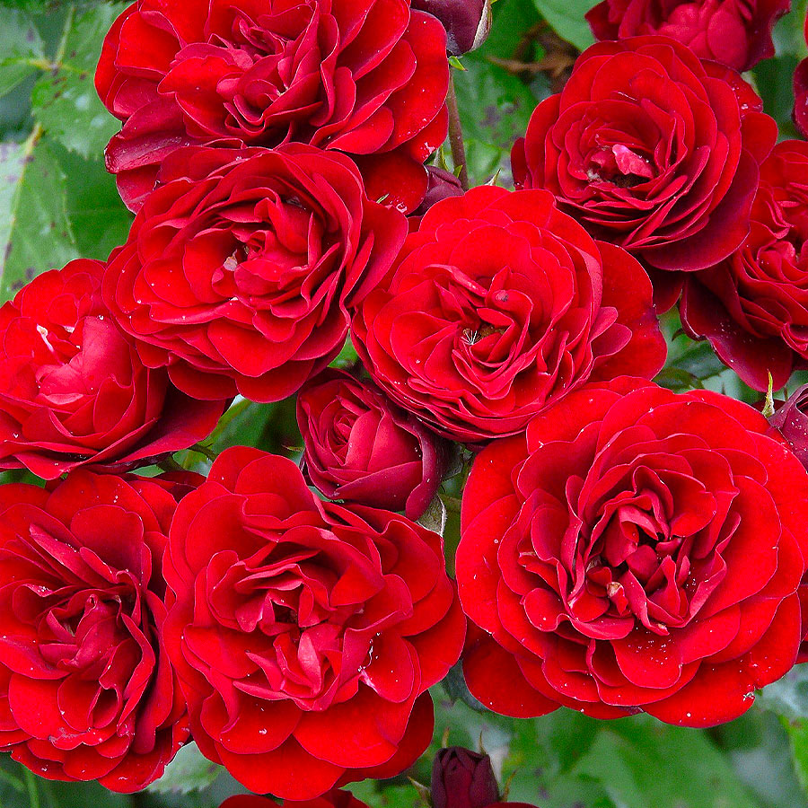
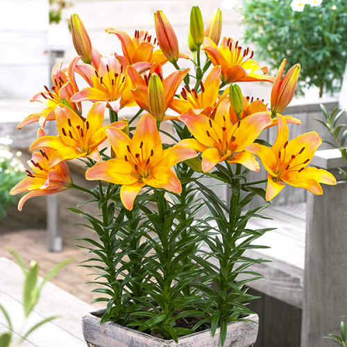
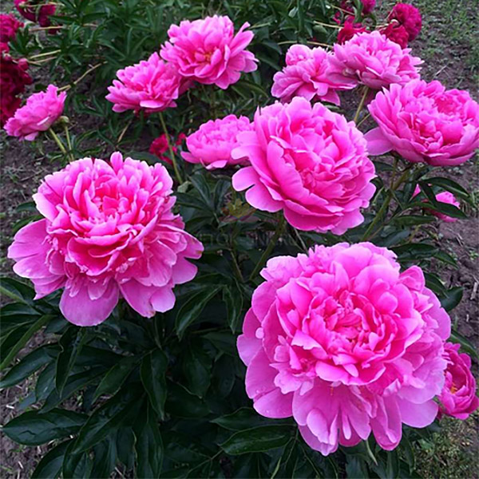

Троянда

Троянда є однією з найпопулярніших садових квітів. Вона має приємний аромат і різноманітні кольори.
Повернутися до початкуЛілія

Лілії відомі своїми великими та яскравими квітами. Вони добре ростуть у сонячних місцях.
Повернутися до початкуПівонія

Півонії мають пишні квіти та довгий період цвітіння. Вони невибагливі у догляді.
Повернутися до початку